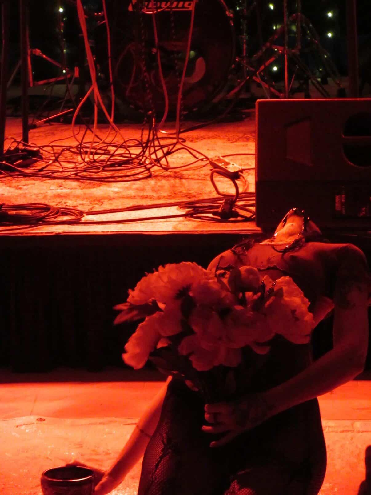

https://putridfauve.bandcamp.com/
Ritual horror rendered in sound.
Industrial noise fused with haunting melodies; performance art unveiled in liminal, uneasy atmospheres.
Warped textures and shadowed environments unravel into a slow, disorienting descent of madness and into a wonderful state of distortion.
Its works linger in themes of ecstasy and violence, moving through instrument, sacrifice, and decay while balancing beauty and dread in a fragile, emotional duality.
Industrial noise fused with haunting melodies; performance art unveiled in liminal, uneasy atmospheres.
Warped textures and shadowed environments unravel into a slow, disorienting descent of madness and into a wonderful state of distortion.
Its works linger in themes of ecstasy and violence, moving through instrument, sacrifice, and decay while balancing beauty and dread in a fragile, emotional duality.